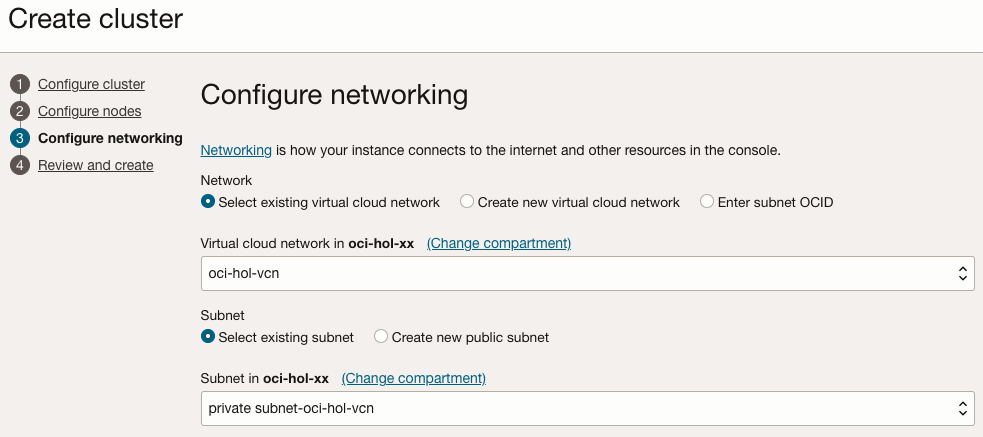
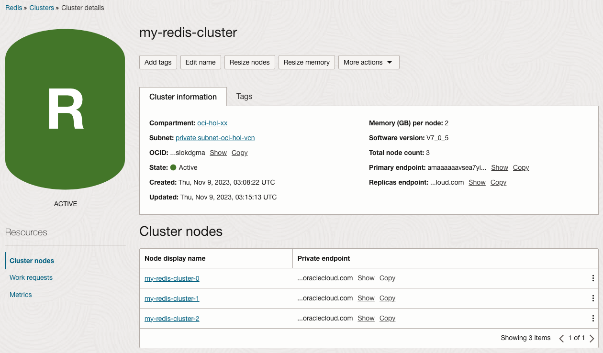
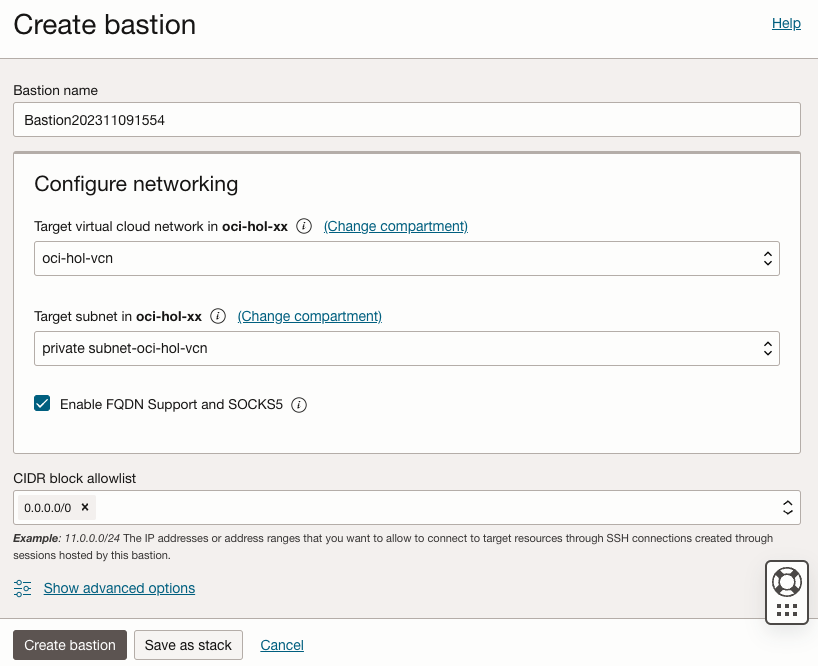
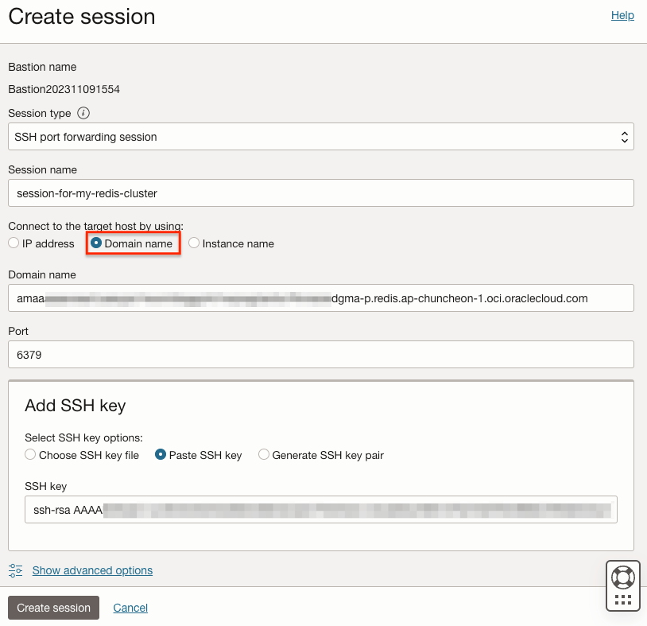
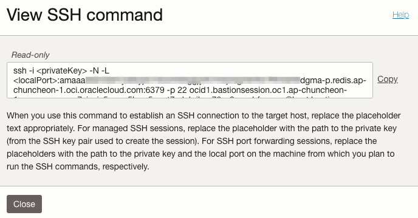

4.1.1.1 OCI Cache with Redis 클러스터 만들기
OCI 콘솔에서 OCI Cache with Redis 서비스로 Redis 클러스터를 만들고, 클라이언트를 가정하여, redis-cli로 접속해 봅니다.
Redis Cluster 만들기
-
OCI 콘솔에 로그인합니다.
-
왼쪽 위 내비게이션 메뉴에서 Database > Redis > Clusters로 이동합니다.
-
클러스터 생성을 위해 Create cluster를 클릭합니다.
-
기본 정보를 입력합니다.
- Name: 클러스터 이름 입력, 예,
my-redis-cluster - Create in compartment: 위치할 컴파트먼트 선택
- Redis software version: 현재는
7.0.5만 지원

- Name: 클러스터 이름 입력, 예,
-
다음으로 노드를 구성합니다.
- Memory (GB) per node: 노드당 할당할 메모리를 입력합니다.
2GB~500GB를 지원하며, 여기서는 최소값을 선택합니다.- 설정한 메모리에 따라 Bandwitdh (GBps)도 함께 변경됩니다.
- Node count: 노드 수를 입력합니다. 1개 ~ 5개
- Primary (읽기/쓰기 가능) 하나에, 나머지는 Replica (읽기만 가능)로 생성됩니다.

- Memory (GB) per node: 노드당 할당할 메모리를 입력합니다.
-
다음으로 네트워크를 구성합니다.
-
사용할 VCN과 서브넷을 선택합니다. 또는 새로 생성할 수 있습니다. 여기서는 기존 생성한 VCN의 Subnet을 선택합니다.
생성된 Redis 클러스터는 현재 Private Endpoint만 제공하여, Public Subnet을 선택하셔도 인터넷에서 접속은 불가합니다.

-
-
입력 정보를 리뷰한 후 클러스터를 생성합니다.
-
참고로, 입력한 정보를 기준으로 클러스터 생성은 6분 50초 정도 걸렸습니다. 환경에 따라 달라 질 수 있습니다.
-
생성된 클러스터
- 현재 Private Endpoint만 제공하여, 인터넷에서 직접 접속은 불가합니다. 기본적으로는 같은 VCN 내에서만 접속이 가능합니다.
- Primary endpoint: 항상 클러스터의 Primary Node에 연결하는 Endpoint입니다.
- Replicas endpoint: 클러스터의 Replica 노드 중 하나로 연결하는 Endpoint입니다. Replica가 둘 이상인 경우, 연결시 이전과 다른 노드로 연결될 수 있습니다.
- Node endpoints: 각 노드로 직접 연결하는 Endpoint입니다. 각 노드로 연결이 잘 되는지 확인용으로 사용할 수 있습니다.

Redis Cluster 연결하기
생성된 Redis Cluster의 Primary Endpoint로 접근이 가능한 위치에서는 클라이언트를 통해 직접 접속합니다. 아래 내용은 편의상 개발환경인 노트북 환경에서 Bastion 세션의 포트 포워딩을 통해 접속 테스트를 하는 과정입니다.
redis-cli 설치
redis-cli를 설치하기 위해 Install Redis or Redis Stack 문서를 참조하여 사용할 환경에서 Redis를 설치합니다. 아래 내용은 macOS에 Redis를 설치하는 과정입니다.
-
터미널에서 다음 명령을 실행합니다.
brew install redis -
다음 명령으로 설치 확인합니다.
$ redis-cli --version redis-cli 7.2.3
Security List에 규칙 등록
Redis 클러스터가 위치한 서브넷상의 Securit List에 Redis 서버 포트를 등록하여 개방할 필요가 있습니다.
-
OCI 콘솔에 로그인합니다.
-
클러스터가 속한 서브넷으로 이동합니다.
-
Security List 목록에서 클러스터 생성시 만들어진 redis-security-list를 클릭합니다. 선택한 VCN내 없는 경우 생성됩니다.
-
Ingress Rules에 다음 규칙을 추가합니다.
-
Stateless: No, 체크안함
-
Service Type: CIDR
-
Source CIDR: 클라이언트 대역대 입력, 예, 10.0.1.0/24
-
IP Protocol: TCP
-
Source Port Range: All
-
Destination Port Range: 6379
-
Bastion Service 세션 만들기
redis-cli 또는 관련 클라이언트가 위치한 곳이 Redis 클러스터의 Private Endpoint를 접속 가능한 위치가 아닌 경우, 예를 들어, 인터넷상으로 접속하려는 경우 Bastion Server를 통한 경유가 필요합니다. 여기서는 Bastion Service를 사용하여, 경유해 보겠습니다.
-
OCI 콘솔에 로그인합니다.
-
왼쪽 위 내비게이션 메뉴에서 Identity & Security > Bastion으로 이동합니다
-
생성을 위해 Create bastion을 클릭합니다.
-
아래와 같이 Bastion을 생성합니다.
- Target VCN, Target Subnet: Redis 클러스터에 접속가능한 서브넷을 선택합니다. 여기서는 Redis 클러스터와 위치한 서브넷 선택
- Enable FQDN Support and SOCKS5: Redis 클러스터의 Primary Endpoint 등이 FQDN으로 제공되므로 해당 사항 선택
- CIDR block allowlist: Bastion을 접속할 클라이언트 IP의 CIDR입력

-
만든 Bastion 상세화면으로 이동합니다.
-
생성이 완료되면, 사용할 세션을 만들기 위해 Create session을 클릭합니다.
-
아래와 같이 세션을 생성합니다.
- Connect to the target host by using: Redis 클러스터의 Primary Endpoint의 FQDN을 사용하기 위해 Domain name을 선택
- Domain Name: Redis 클러스터의 Primary Endpoint의 FQDN 입력
- Port: 6379
- Add SSH Key: 세션 연결시 사용할 SSH Key의 Public Key 입력

-
세션이 생성되면, 오른쪽 액션 메뉴를 클릭하여 View SSH Command를 확인합니다.

-
redis-cli가 설치된 클라이언트에서
경로와 localPort를 6379로 하여 SSH command를 실행합니다. 오류없이 실행되는 것을 확인합니다. 실행 후 별다른 로그 없이 커서가 떠 있으면 됩니다. - Permission denied (publickey) 오류가 발생하는 경우 세션 접속용 SSH command 실행시 접속 오류 - Permission denied (publickey) 참고하여 해결합니다.
$ ssh -i ~/.ssh/id_rsa -N -L 6379:amaaxxxxxxxxxxxxxxxxxxxxxxxxxxxxxxxxxxxxxxxxxxxxxxxxxxxxdgma-p.redis.ap-chuncheon-1.oci.oraclecloud.com:6379 -p 22 ocid1.bastionsession.oc1.ap-chuncheon-1.amaaxxxxxxxxxxxxxxxxxxxxxxxxxxxxxxxxxxxxxxxxxxxxxxxxxxxxwpsq@host.bastion.ap-chuncheon-1.oci.oraclecloud.com -
Redis 클러스터의 Primary Endpoint에 대해서 로컬 포트로 포트포워딩이 되었습니다.
redis-cli로 Redis 클러스터에 접속하기
-
redis-cli로 포트 포워딩된 localhost, 6379 포트로 접속합니다. 접속후 ping 명령을 수행하면, 응답이 오는 것을 확인할 수 있습니다.
- –tls: OCI Cache with Redis로 만들어진 Redis 클러스터는 –tls 옵션은 반드시 사용합니다.
- -h: 대상 Endpoint를 입력합니다. 여기서는 포트포워딩 되었기 때문에 localhost로 입력합니다.
$ redis-cli --tls -h localhost localhost:6379> ping PONG localhost:6379> -
테스트로 SET key value 순으로 아래와 같이 입력하고 GET key 명령으로 조회합니다.
localhost:6379> SET hkey "Hello World!" OK localhost:6379> GET hkey "Hello World!" -
redis-cli로 OCI Cache with Redis 서비스로 생성한 Redis 클러스터에 연결을 확인하였습니다.
이 글은 개인으로서, 개인의 시간을 할애하여 작성된 글입니다. 글의 내용에 오류가 있을 수 있으며, 글 속의 의견은 개인적인 의견입니다.